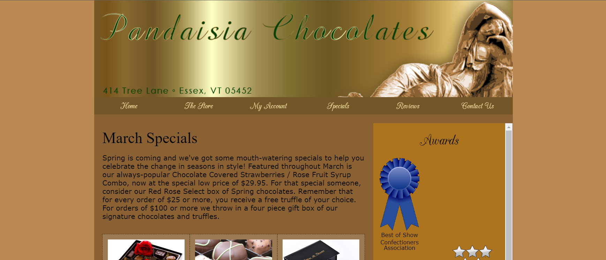

- 1-2 Try it Out: Mobile Panini
- In this assignment, I practiced what I learned in the first assignment, building the various pages of the Mobile Panini website, including a home page, menu, events calendar, and catering information page.
- 1-4 Try it Out: Mountain Wheels

- This assignment had me create and adjust the style of the Mountain Wheels website; changing colors, fonts, sizes, and spacing using CSS.
- 2-2 Try it Out: Pandaisia March Specials
- In this assignment, I built the layout according to the textbook. Included in the page are examples of grid layout, absolute positioning, float layout, auto overflow, and various width/height modifiers.
- 2-4 Try it Out: DLR Morning Schedule
- In this assignment, I reviewed all the table structure HTML and CSS elements, creating the morning schedule for Dakota Listener Radio. Colors, layout, col- and rowspan, align, caption, and more!
- 3-2 Try it Out: The Ferris Family

- This assignment instructed me to style the Ferris Family website, using various CSS graphic design properties. Included were text and box shadows, border images, background images, linear gradients, and various image transformation properties, such as translate and rotate, along with many filter propterties like sepia, saturation, hue rotate, brightness, and contrast.
- 3-5 Try it Out: Customer Info/Build Your Pizza
-
In this assignment, I created forms for the Red Ball Pizza website on the Customer Information page and the Build Your Pizza page. The forms included text inputs, time inputs, number inputs, sliders, checkboxes, and quite a few radio buttons.
- 5-2 Try it Out: Star Dust Stories
- This assignment was the first "Try it Out" for JavaScript, I used the topics we learned about in the last assingment to update the time and date displayed on the webpage, and then used that data to change an image displayed on the page.
- 5-4 Try it Out: Lyman Hall Events
- In this assignment, I practiced linking JavaScript files to HTML files, creating and managing variables, and inserting HTML code using JavaScript.